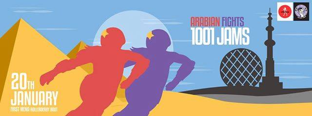
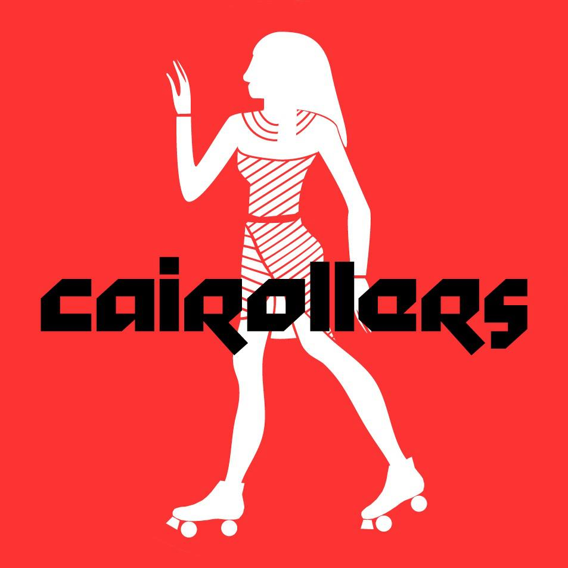
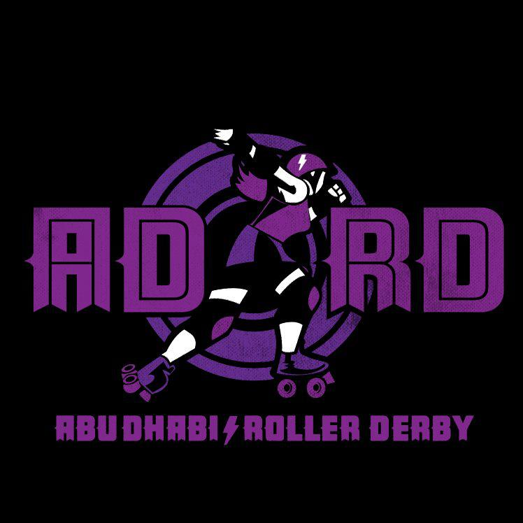

MENA's first ever public interleague - Abu Dhabi v CaiRollers.
On Friday 20th January, a little bit of roller derby history will be made when the CaiRollers host Abu Dhabi Roller Derby in the first ever public interleague game in the MENA region: Arabian Fights: 1001 Jams.

It's taken both leagues several years to get to this point, and we spoke to Susan Nour (Nofearteti) of CaiRollers and Abu Dhabi Roller Derby's Milene Bizachi (Milificent) to find out more about the leagues and their thoughts on the upcoming game.

How did CaiRollers begin as a league, and how has it developed over the years?
We began in 2012 after two American expats met at work at a school in Cairo and realized that they had both previously played roller derby elsewhere. Shaneikiah Bickham (Naughty Ven Close) had played with the Big Easy Roller Girls and Angie Kaster (Indie Hannah) had played with the London Roller Girls. In that first year of their acquaintance they brainstormed on how to they could get a league started here in Egypt (because skates and gear are not available), and they started small with 8 players in September 2012. They had a vision that they wanted the league to be a more homegrown effort and not populated solely by expats in Egypt, and that has been the case. Today, our league is about 25 strong made up of Egyptian women and men from various social classes, with a handful of expats rounding out the numbers.
What difficulties have you faced in getting to this point?
The main difficulties have been very similar to those faced by any other derby league in the world: finding suitable practice space, financing things and drumming up interest among people who have never heard of roller derby and have no idea what it's about. In addition to those issues we also still struggle with access to gear. While you can buy some basic protective gear in Cairo, it's not as durable as one would hope for roller derby. And while you can find in-line skates here, you can't find the kind of skates needed for derby. We've been wonderfully supported with gear donations from roller derby leagues around the world, and whenever one of our league travels we try to bring back gear for those who need it.
CaiRollers is already a trailblazer, as the first roller derby league in Egypt. How does it feel to be hosting the first ever roller derby game in the MENA region?
It feels fantastic! We are incredibly excited and proud to be hosting this game and cannot wait to face off against our sisters from Abu Dhabi. They have been incredible about organizing their members and self-funding to get here, and it has been great working with ADRD to get this thing off the ground. Our trainers and players have also been working so hard to get ready for game day. This has been the dream since the league started four years ago, so it definitely feels like a big achievement made all the better by the fact that so many people have come together across the two leagues to make this happen.
How have you been preparing for the game?
Aside from the practical things like securing a venue, boutfits, NSOs, volunteers etc. we've been working hard in practice on our strategy and teamwork, and devoting more time to conditioning out of regular practice times.
What has the local reaction been, both to the league in general and to this game?
Since our inception, local reaction has been much more subdued than on the international scale. Although we've been around four years and have received wide media coverage both locally and internationally, we still remain relative unknowns within Egypt. Those who know us and are excited about what we're doing are mostly friends and colleagues. Having said that, among that subset people are really excited and see this game for the historic event that it is! As for reaction to the game in general - to know roller derby is to love it, and once people become familiar the game they generally become serious fans. We've been very lucky to have so much support at home and abroad.
What are CaiRollers hopes and plans post-game, for 2017 and beyond?
Now that we've come to this major milestone we hope to continue finding ways to play against leagues around the world. We've already got a game lined up with a team from Marseilles in April, and are having conversations here and there with other leagues around the world so we hope to see what comes out of those. At home, we hope to continue to grow both in numbers and skill and maintain the local, homegrown nature of our league.

How did Abu Dhabi Roller Derby begin as a league, and how has it developed over the years?
Roller derby was started in both Dubai and Abu Dhabi by expatriates with experience from playing roller derby in leagues from the USA, UK, Canada and Australia. Dubai has had a league since 2012. Abu Dhabi started skating regularly at Zayed Sports City and duForum in 2013. Since then our league has grown to around 40 members, with 20 skating regularly. We still struggle to retain people as expats are often moving in and out of the country, but we have a great core team now of 12 girls, 2 refs and lots of volunteers.
How does it feel to be taking part in the first ever roller derby game in the MENA region?
These are exciting times. It's hard to train and keep yourself motivated without having a game or competition as a goal. The lack of other roller derby teams in the area is the main reason for this. So this game not only gave us a goal, but also raised the profile of the sport in the region, hopefully opening the doors for future games and the development of new roller derby teams.
How have you been preparing for the game?
We train twice a week, outside, for about 2 hours. We have been working on reviewing the rules of the game, ensuring everyone knows the procedures, looking at and practising different strategy drills and playing against each other. We have also been testing a few new 'moves' and seeing what works. We have a few very experienced players, but also lots of people who have never taken part in a bout.
What are your hopes and plans post-game, for 2017 and beyond?